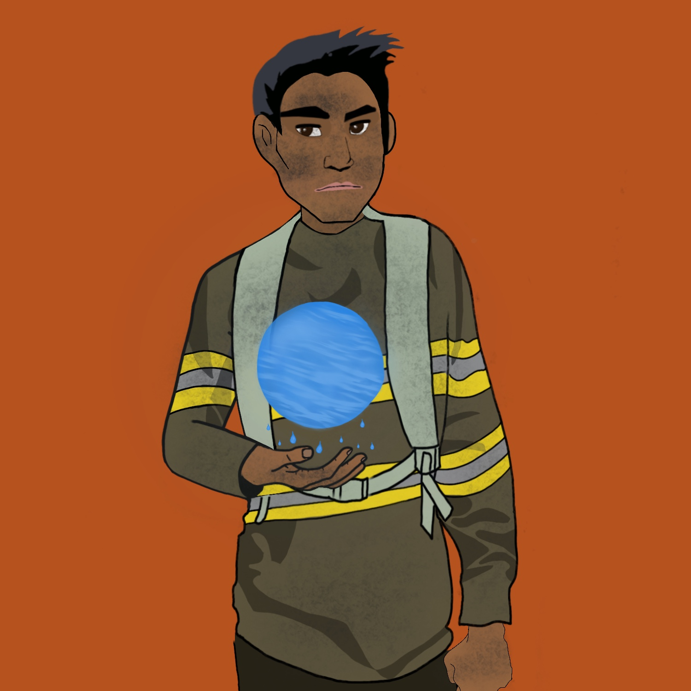

ROLAND
Painted Character
Project 2

Description:
For this project, I wanted to capture the essence of a firefighter and make it into a character of some sort. I wanted to do this image especially with the destructive wild fires that were going on this past summer on the west coast. This image portrays a guy (like a college student) with a backpack that looks more fitting for school than for fighting fire. The guy manipulates a ball of water in his hand, with droplets of water falling from it. While I mainly relied on solid shapes and colors using the painting brush for the majority of the image, I also used other brushes to add a textural component for the smoke and to add an ashy look to the character.